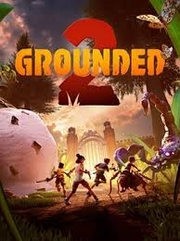

 |
|
| Tiempo de juego | No Jugado |
| Última actividad | Nunca |
| Añadido | 26/09/2025 18:53:55 |
| Modificado | 26/09/2025 19:05:54 |
| Estado de finalización | Not Played |
| Librería | Playnite |
| Fuente | 6TB STORE |
| Plataforma | PC (Windows) |
| Fecha de lanzamiento | 29/07/2025 |
| Puntuación de la Comunidad | 78 |
| Puntuación de la Crítica | |
| Puntuación de usuario | |
| Género | Acceso anticipado Acción Aventura |
| Desarrollador | Eidos-Montréal Obsidian Entertainment |
| Editor | Xbox Game Studios |
| Característica | Compat. Total Con Mando Cooperativo Cooperativo En Línea Multijugador Préstamo Familiar Un Jugador |
| Enlaces | Punto de encuentro Discusiones Guías Noticias Página de la tienda PCGamingWiki |
| Tag | Acceso anticipado Acción Aventura Construcción de bases Cooperativos Cooperativos en línea Exploración Fabricación Multijugador Mundo abierto Políticos Primera persona Rol Sandbox Supervivencia Supervivencia en mundo abierto Tercera persona Terror Un jugador |
Has vuelto a encoger, pero ahora el mundo es mucho más grande. Sobrevive a un mundo abierto en expansión en solitario o con amigos. Fabrica armas y armaduras y construye bases mientras exploras el parque a lomos de leales insectos. Descubre misterios ocultos y enfréntate a amenazas inesperadas, pero debes saber que hay algo más ahí fuera... y no te ha olvidado.
Siendo del tamaño de una hormiga, encontrarás espacios que te resultaban familiares ahora transformados en una vasta frontera inexplorada. Sobrevive en solitario o en modo cooperativo con amigos, fabricando armas y armaduras y construyendo bases mientras exploras campos de juego artificiales invadidos por la naturaleza. Viaja por este nuevo mundo a lomos de leales insectos y descubre los misterios que acechan bajo los brillantes colores y las imponentes estructuras. Pero mantente alerta: hay algo más ahí fuera... y no te ha olvidado.
Sobrevive, adáptate y triunfa
El mundo es implacable, pero tú también. Da forma a tu aventura con arquetipos únicos, cada uno con habilidades diferentes que se adaptan a tu estilo de juego. Tanto si optas por la precisión, el ingenio o la fuerza bruta, necesitarás cada ventaja que puedas obtener para sobrevivir a los peligros del parque.
La unión hace la fuerza
En solitario, los peligros del parque pueden resultar abrumadores, pero con amigos, cada desafío se convierte en una aventura. Colabora para construir, luchar y descubrir los secretos enterrados bajo la hierba. Tanto si te enfrentas al peligro codo con codo con amigos como si continúas tu viaje en un mundo compartido, sobrevivir siempre es más fácil con aliados.
Andar es cosa del pasado
Corretean, luchan y ahora te ayudan a sobrevivir. ¡Ayuda a eclosionar a tus nuevos amigos insectos, los Bichacos, y críalos para usarlos como monturas! Súbete y viaja por el parque, lucha sobre ellos o a su lado, o úsalos para recolectar recursos y construir tu base. El compañero adecuado puede marcar la diferencia entre sobrevivir a duras penas o prosperar.
Una sombra te sigue
La amenaza está siempre ahí, observando, aprendiendo y esperando... No sabes de dónde viene, solo que nunca se va. Cuanto más investigas, más se acerca. Algunos misterios están mejor enterrados, pero ahora es demasiado tarde. Sabe que estás buscando, y te está esperando. Cada respuesta te sumerge más en la búsqueda, cada paso invita a algo a acercarse. Creías que no había nadie. Creías que tenías el control. Te equivocabas.